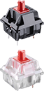
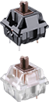
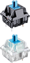

|
|
Klawiatura mechanicznaPojawiły się w komercyjnym obiegu już w latach 70' ubiegłego wieku i były jednymi z pierwszych urządzeń wyjścia, dodawanych do komputerów domowych. Jak historia ma w zwyczaju, stare pomysły okazują się najlepszymi – po wielu latach, wraz z rozwojem branży gamingowej, dokładność „mechaników” na powrót została doceniona.
Działanie
Ich precyzja działania polega na osadzeniu każdego z przycisków na osobnym przełączniku, w których elementem roboczym jest stalowa sprężyna. W zależności od producenta czy rodzaju „switcha”, klawisze charakteryzują się różnymi siłami aktywacji. Wśród graczy doskonale sprawdzą się przełączniki liniowe, natomiast osoby poszukujące klawiatury do pisania powinny wybierać te o „progresywnej” sile aktywacji.
|  | Przełączniki CHERRY MX RED jedne z najczęściej wybieranych przełączników przez graczy z powidu szybkiej rekacji na wcisnięcie i powrotu do pozycji wyjściowej. Nie posiadają charakterystycznego dzwięku aktywacji. |
|  | Przełączniki CHERRY MX BRA najszęśąciej wybierane przez odoby ,które potrzebują klawitaury zarówno do grania jak i pisania. Mimo brkau charakterystycznego dzwięku aktywacja jest wyraźnie wyczuwamy dany moment. |
|  | Przełączniki CHERRY MX BLUE jedne z najczęściej wybieranych przełączników przez odoby piszące z powidu charakterystycznego dzwięku aktywacji. |
Klawisze w klawiaturze mechanicznej są niezwykle trwałe (wytrzymują do około 50 milionów kliknięć) i mają niezmienną charakterystykę. Właśnie dlatego, pomimo wyższej ceny, zakup przyzwoitego „mechanika” często okazuje się być bardziej ekonomiczną opcją od klawiatur membranowych. Osoby wykorzystujące taki typ klawiatur podczas rozgrywek, doceniają aktywację w połowie skoku oraz bardzo szybki powrót do pozycji wyjściowej, co umożliwia wykonanie wielu bardzo szybkich ruchów.
|